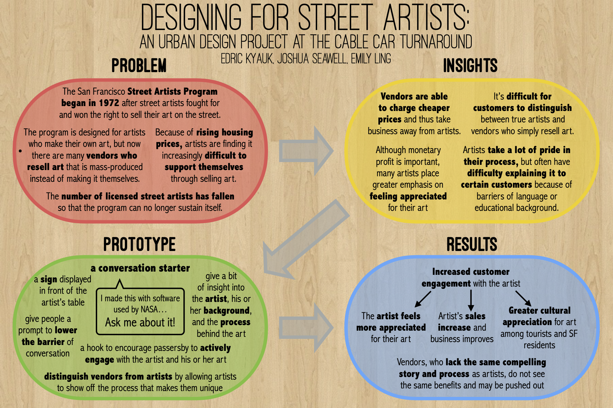

A series of urban design projects in Bay Area communities, with the purpose of encouraging vibrant and inclusive public spaces.
In this project, we sought to revitalize Herrin Lawn, a courtyard among the biology buildings at Stanford University. The space was very underutilized for a number of reasons, as we learned from interviewing students and observing the space. Our goal was to transform Herrin Lawn into a creative, collaborative workspace that would draw in users from across campus.
Based on insights from user interviews and observations, we envisioned a public space combining a “study playground”, containing fun, flexible seating arrangements, with study booths, used for individual and group work. Based on our insights, we developed a full-size prototype of the study booth. We set up two wooden walls as the booth, with whiteboards on the inner walls and a power strip extended to the table. The booth provides the amenities and environment to encourage a relaxed, designated space for group work.
A report on our interviews and observation can be found here.
The goal of this project was to design a prototype to address an urban issue in San Francisco. Our group focused on the cable car turnaround at the Ferry Building in San Francisco, where every weekend, artists sell a wide variety of photography, jewelry, crafts, and other wares along the sidewalk.
Our team’s design principle: “Design should foster artistic conversation.” As we conducted interviews with many different artists, we heard a number of recurring themes, including language barriers between Chinese or Spanish-speaking artists that made it difficult for them to sell their art, as well as tensions between artists who crafted all of their own art and vendors who sold mass-produced products. We increasingly found that “artistic conversation” was very much at the center of what we were trying to do. Conversation was important to everyone we talked to: whether it was a desire for better conversations with customers, existing conversation between artists, or a lack of conversation between street artists and the Arts Commission, conversation was a topic that ended up being our primary focus.
We explored a number of different prototypes, but our final prototype was a simple “conversation starter” — we wanted to create more engaging and intriguing conversation between street artists and their customers, which would also help address issues such as language barriers and the tension between artists and vendors.
These projects were done for Civic Dreams, Human Spaces: Urban Design with People (URBANST104) which I took during fall 2015 at Stanford University. The course, which was offered by the d.school, focused on human-centered design of cities and public spaces. Course projects included real-world urban design projects in Bay Area communities, aiming to use creative techniques to encourage vibrant, inclusive, and participatory civic spaces. These projects were done in teams of three students.
September - December 2015